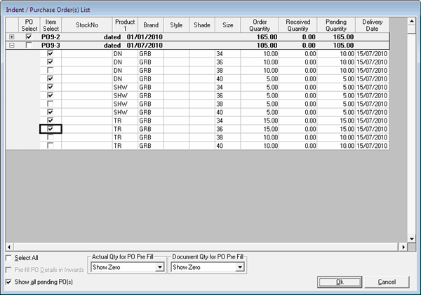

This option is used to select items against the pending Purchase Order raised on the selected supplier.
The Indent/ Purchase Order(s) List is displayed.

A tree view option is available when the PO browse is selected. The PO browse can be expanded or shrunk by clicking + or -.
PO Select: To select purchase order and all items under it.
Item Select: To select an individual Item.
Select All: To select all the purchase orders displayed in the list.
Pre-fill PO Details in Inwards: To pre-fill the item details in the Goods Inward grid with details of the selected items from Purchase Order / Indent.
Note: This pre-fill is allowed if the system parameter Auto Pre-fill PO details in Goods Inwards (Only for POs based on stock number) under the category Inwards is set to 1. Even when set, it gets activated only when the purchase orders selected are raised at stock number level and not at item attribute level.
Actual Qty for PO Pre Fill: To select the value to be applied as actual quantity in the grid.
Document Qty for PO Pre Fill: To select the value to be applied as document quantity in the grid.
Show all pending PO(s): To display all the pending purchase orders.